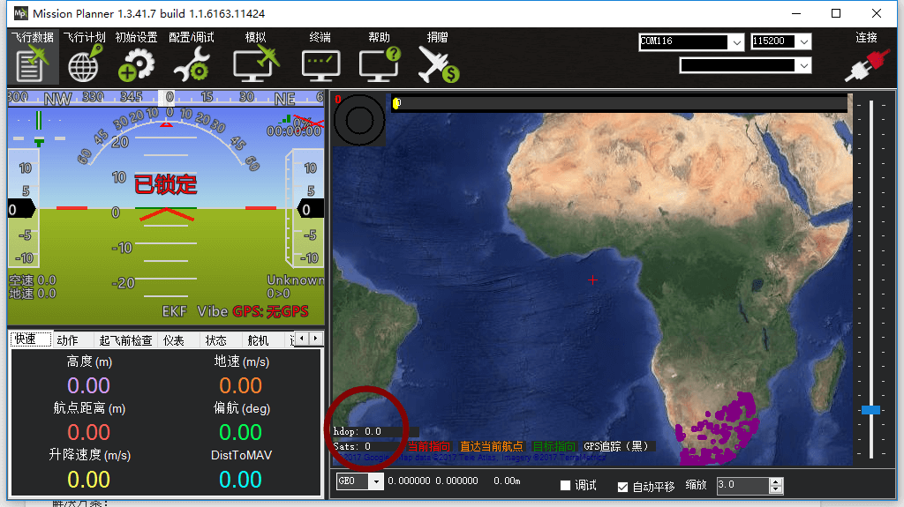
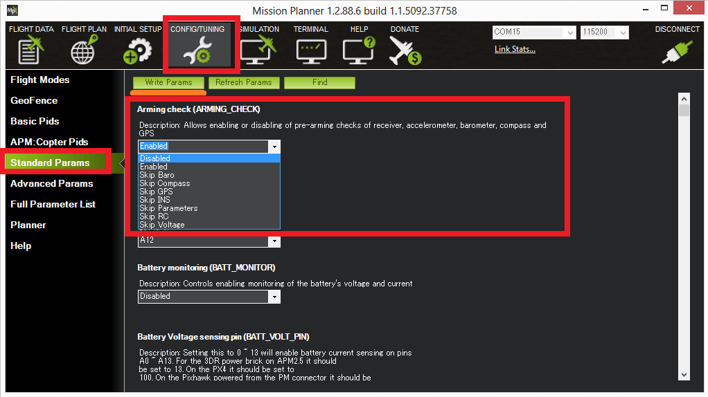

Pre-Arm 安全检查程序
APM：Copter多旋翼 固件内部有一套非常完善的Pre-Arm安全检查提醒机制，会检查你的飞行器是否有大量问题，包括各种未校准，已经是否传感器已经出现损坏，当然这解锁检查机制也不是百分百可靠的，你可以通过在全部参数列表Arming-check 禁用他
使用GCS地面站查看Pre-Arm错误信息
在闪烁黄色灯时，使用者会无法解锁，而且解锁时蜂鸣器也会长鸣2下。此时你必须连接上地面站，才能排除究竟是什么问题导致了不能解锁和飞行，一般通常是 传感器未校准 或者出现了失控保护、低压设置不正确等等，下面会详细分析每种报错内容:
阅读下面内容前，请确保你已经使用并连接地面站、做了飞控板校准以及会简单使用遥控器。如果还不会，请查看之前的章节：）
- 飞控板已经连接好遥控器接收机，并拆除螺旋桨和动力电池
- 通过USB或者数传（WP-LINK\3DR\XBEE\XTND）连接上地面站（电脑地面站：Mission Planner或者安卓：CUAV Hfight）
- 打开你的遥控器，并试图解锁[解锁通道是：油门最低 (3通道）、YAW最右（4通道）]
- 此时，在地面站窗口应该可以看见红色的Pre-Arm 错误提示，如果没有，一般是解锁通道不正确导致飞控无法感知你的解锁操作
解锁失败的提示信息：
检测不到接收机的信号输入
解决方案：
1：如果是使用PPM编码器小板，检查一下PPM编码器 蓝色状态灯是否还会闪烁（可以判断PPM编码器是否还在工作）
2：如果使用SBUS和PPM接收机，检查接收机设置是否正确
3：有可能飞控硬件固件，需要返厂检修，一般可能性比较小
BAD AHRS（姿态错误）
校准空速计或者校准加速计
Bad or no terrain Data（没有或者坏的地形数据）
无gps定位或者定位精度不够高（hdop需要低于0.8）
RC not calibrated （遥控器未校准）
遥控器还未校准，或者范围不在飞控记录值内，通常都是设置了遥控器或者换了遥控器导致，请重新做校准既可
RC3油门通道MIN最小值及MAX最大值理想范围是1100-1900.
而其他通道最小值不要大于1300和最大值不要小于1700。理想值也是1100-1900
电子罗盘常见错误提示：
Compass not healthy（电子罗盘不健康）
电子罗盘不健康的提示，也有可能是没有数值或者硬件损坏
也有可能环境温度低于0下，可能会导致罗盘传感器没有数值
解决方案：
- 重新上电
- 如果温度过低，请做好保温措施，重新上电
- 在地面站-状态检查罗盘数值是否正确 MX1 MY1 MZ1 \MX2 MY2 MZ2
Compass not calibrated（罗盘没有校准）
罗盘没有校准，或者罗盘被移除和新增，都会提示罗盘未校准
解决方案：
- 安装好罗盘后，重新做校准
Compass offsets too high （罗盘偏移值太高）
主罗盘的偏移值(i.e. sqrt(x^2+y^2+z^2)) 大于500，就会提示这个，一般情况都是飞控或者GPS附近有磁性物体（马达、螺丝、电池等）导致，或者环境有比较强的磁场干扰。
解决方案：
- 请排除干扰后重新上电
- 重新换一个位置安装飞控或者GPS，重新校准
- 换一个环境试试
Check mag field （检查罗盘磁场）
如果在室内、或换了不同环境、或附近有磁干扰可能会提示这个错误
解决方案：
- 如果换了环境，重新做校准即可
- 如果在室内或者有干扰源，离开干扰源即可
Compasses inconsistent：（罗盘不一致）
内部罗盘和外部罗盘指向不一致（>45度）。这通常是外部罗盘方向设置不正确导致（compass_orient）
解决方案：
- 重新做校准即可。选择PX4 校准，方向不用选择
GPS常见故障：
GPS Glitch（GPS故障） / Need 3D Fix (需要3D定位)
如果GPS未定位成功或者没有GPS.而且使用了需要GPS的飞行模式(Loiter Poshold)或者电子围栏被启动，就会提示这2个错误信息
解决方案：
- 如果没有安装GPS或者在室内飞行，请切换到不需要GPS的相关
- 等待GPS被3D FIX定位
- NO GPS 没有检查到GPS硬件：检查连接线
- NO FIX没有3D锁定，请把飞行器和GPS放在室外无遮挡的地方
Bad Velocity：（坏的速度）
一般是GPS飘逸速度过快，高于50CM/S
这个问题可能是移动速度过快，或者加速计没有正确校准，或者GPS刷新率低于5HZ。
解决方案：
- 等待GPS卫星锁定更多数量。HDOP小于1.5
High GPS HDOP：（HDOP精度过高）
卫星定位精度HDOP过高，一般是卫星数量不够导致
解决方案：
- 放在室外无遮挡环境。等待几分钟，卫星锁定更多后
HDOP在地面站这个位置可以看见
INS检查（例如加速计和陀螺仪检查）
INS not calibrated：（INS加速计没有校准）
加速计没有校准，或者校准不正确
解决方案：
- 重新校准加速计。查看校准加速计章节
Accels not healthy（加速计不健康）
这可能是一个硬件问题，也有可能是刷了固件之后，马上启动飞控，也会提示这个错误
解决方案：
- 重新上电飞控板，并重新连接
- 联系CUAV技术支持部门解决
Gyros not healthy（陀螺仪不健康）
陀螺仪数据跳动比较厉害，数值不在范围、没有数据，这也可能是一个硬件问题，或者上电时没有静止，导致的报错
解决方案：
- 放平不动，重新上电
- 如果尝试重新上电几次还是有问题，请联系CUAV技术部门进行排除
Gyro cal failed （陀螺仪校准失败）
一般是上电时（在红蓝灯闪烁时，被断了电源。或者数值超过峰值也会导致这个错误信息
解决方案：
- 重新放平上电
Gyros inconsistent：（陀螺仪不一致）
2个陀螺仪的旋转利率相差20度/秒以上，这有可能是一个硬件故障，或者是陀螺仪标定不正确
解决方案:
- 重新上电
- 联系CUAV技术部门
主板电压检查
Check Board Voltage：（检查主板电压）
当主板电压低于4.3 高于5.8V时，就会出发Check Board Voltag
使用过低的USB电压供电也会触发。
如果这是从一个电源模块供电，都会提示检查主板电压，这可能是一个严重的问题
解决方案：
- 检查供电电压是否在5V左右
- 使用CUAV IV 模块供电或者标准的5V电压模块
Check FS_THR_VALUE ：（检查失控油门值）
当前油门值过低，已经触发了失控保护
解决方案：
- 检查遥控器油门通道设置，正常值不要低于1100，最合适的值是1100+-5
- 检查地面站-失控保护设置-油门值是否设置的过高
ACRO_BAL_ROLL/PITCH:
ACRO_BAL_ROLL参数高于自稳 roll的P值和/或ACRO_BAL_PITCH参数高于稳定pitch的P值。 这可能导致飞行员无法控制ACRO模式的倾斜角度，因为Acro Trainer的稳定将会超过飞行员的输入。
关闭安全解锁检查：

如果你觉得报错是无意义的，而且又影响你的解锁飞行，你可以通过地面站去关闭他。
- 飞控连接到地面站（使用usb或者数传）
- 配置/调试 选项>标准参数
- ARMING_CHECK选择disable > 写入参数